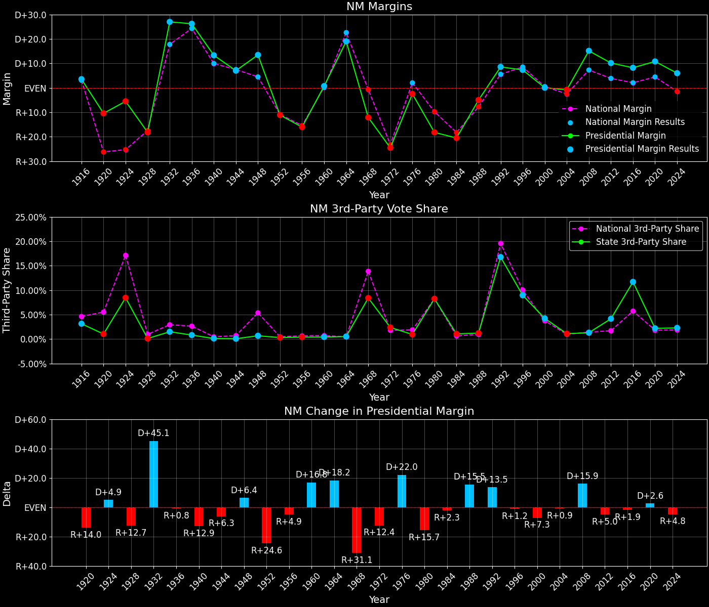
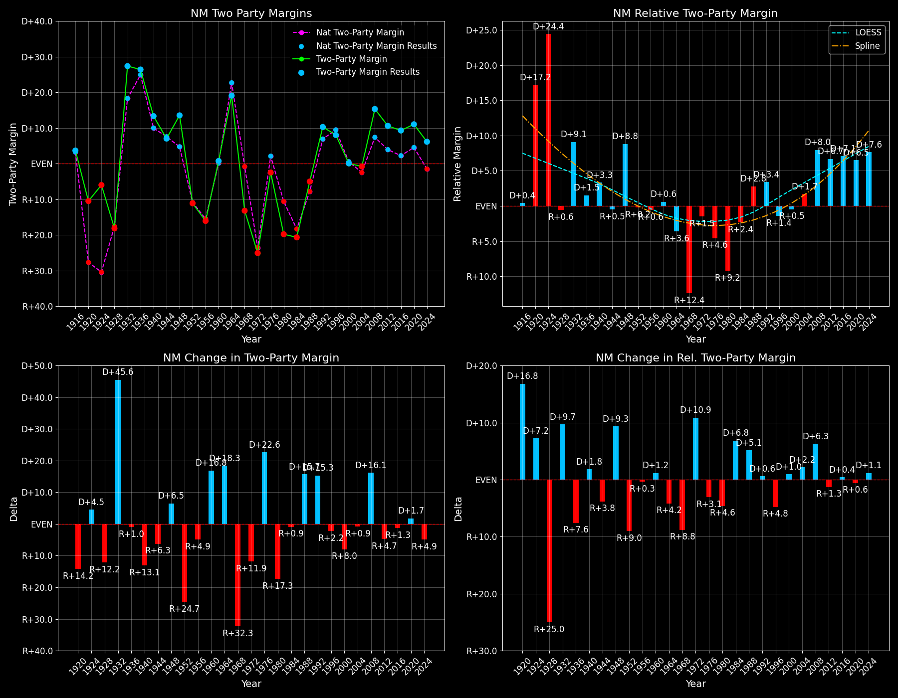

New Mexico (NM) — Statewide

Margins · 3rd-Party share · Pres. deltas

Relative margins · Relative 3rd-Party · Rel. deltas
New Mexico (NM) — Total Data
| Year | D | R | State Margin | Nat. Margin | Rel. Margin | Total votes | EVs |
|---|---|---|---|---|---|---|---|
| 1916 | 33,527(50.2%) | 31,152(46.6%) | D+3.6 | D+3.1 | D+0.4 | 66,787 | 3 |
| 1920 | 46,668(44.3%)(Δ 13,141) | 57,634(54.7%)(Δ 26,482) | R+10.4(Δ R+14.0) | R+26.2(Δ R+29.3) | D+15.8(Δ D+15.3) | 105,406(Δ 38,619) | 3 |
| 1924 | 48,542(43.0%)(Δ 1,874) | 54,745(48.5%)(Δ -2,889) | R+5.5(Δ D+4.9) | R+25.2(Δ D+1.0) | D+19.7(Δ D+4.0) | 112,830(Δ 7,424) | 3 |
| 1928 | 48,211(40.9%)(Δ -331) | 69,645(59.0%)(Δ 14,900) | R+18.2(Δ R+12.7) | R+17.4(Δ D+7.8) | R+0.7(Δ R+20.5) | 118,014(Δ 5,184) | 3 |
| 1932 | 95,089(62.7%)(Δ 46,878) | 54,217(35.8%)(Δ -15,428) | D+27.0(Δ D+45.1) | D+17.8(Δ D+35.2) | D+9.2(Δ D+9.9) | 151,606(Δ 33,592) | 3 |
| 1936 | 106,037(62.7%)(Δ 10,948) | 61,727(36.5%)(Δ 7,510) | D+26.2(Δ R+0.8) | D+24.3(Δ D+6.5) | D+1.9(Δ R+7.3) | 169,176(Δ 17,570) | 3 |
| 1940 | 103,699(56.6%)(Δ -2,338) | 79,315(43.3%)(Δ 17,588) | D+13.3(Δ R+12.9) | D+10.0(Δ R+14.3) | D+3.4(Δ D+1.4) | 183,258(Δ 14,082) | 3 |
| 1944 | 81,389(53.5%)(Δ -22,310) | 70,688(46.4%)(Δ -8,627) | D+7.0(Δ R+6.3) | D+7.5(Δ R+2.5) | R+0.5(Δ R+3.8) | 152,225(Δ -31,033) | 4 |
| 1948 | 105,464(56.4%)(Δ 24,075) | 80,303(42.9%)(Δ 9,615) | D+13.5(Δ D+6.4) | D+4.5(Δ R+3.0) | D+9.0(Δ D+9.4) | 187,063(Δ 34,838) | 4 |
| 1952 | 105,661(44.3%)(Δ 197) | 132,170(55.4%)(Δ 51,867) | R+11.1(Δ R+24.6) | R+10.9(Δ R+15.3) | R+0.3(Δ R+9.2) | 238,608(Δ 51,545) | 4 |
| 1956 | 106,098(41.8%)(Δ 437) | 146,788(57.8%)(Δ 14,618) | R+16.0(Δ R+4.9) | R+15.4(Δ R+4.5) | R+0.6(Δ R+0.4) | 253,926(Δ 15,318) | 4 |
| 1960 | 156,027(50.2%)(Δ 49,929) | 153,733(49.4%)(Δ 6,945) | D+0.7(Δ D+16.8) | D+0.2(Δ D+15.6) | D+0.6(Δ D+1.2) | 311,107(Δ 57,181) | 4 |
| 1964 | 194,017(59.2%)(Δ 37,990) | 131,838(40.2%)(Δ -21,895) | D+19.0(Δ D+18.2) | D+22.6(Δ D+22.4) | R+3.6(Δ R+4.2) | 327,615(Δ 16,508) | 4 |
| 1968 | 130,081(39.7%)(Δ -63,936) | 169,692(51.8%)(Δ 37,854) | R+12.1(Δ R+31.1) | R+0.7(Δ R+23.3) | R+11.4(Δ R+7.8) | 327,281(Δ -334) | 4 |
| 1972 | 141,084(36.6%)(Δ 11,003) | 235,606(61.0%)(Δ 65,914) | R+24.5(Δ R+12.4) | R+23.1(Δ R+22.4) | R+1.3(Δ D+10.1) | 385,931(Δ 58,650) | 4 |
| 1976 | 201,148(48.3%)(Δ 60,064) | 211,419(50.7%)(Δ -24,187) | R+2.5(Δ D+22.0) | D+2.1(Δ D+25.2) | R+4.5(Δ R+3.2) | 416,590(Δ 30,659) | 4 |
| 1980 | 167,826(36.8%)(Δ -33,322) | 250,779(55.0%)(Δ 39,360) | R+18.2(Δ R+15.7) | R+9.7(Δ R+11.8) | R+8.4(Δ R+3.9) | 456,237(Δ 39,647) | 4 |
| 1984 | 201,769(39.2%)(Δ 33,943) | 307,101(59.7%)(Δ 56,322) | R+20.5(Δ R+2.3) | R+18.2(Δ R+8.5) | R+2.3(Δ D+6.2) | 514,370(Δ 58,133) | 5 |
| 1988 | 244,497(46.9%)(Δ 42,728) | 270,341(51.9%)(Δ -36,760) | R+5.0(Δ D+15.5) | R+7.7(Δ D+10.5) | D+2.8(Δ D+5.0) | 521,287(Δ 6,917) | 5 |
| 1992 | 261,617(45.9%)(Δ 17,120) | 212,824(37.3%)(Δ -57,517) | D+8.6(Δ D+13.5) | D+5.6(Δ D+13.3) | D+3.0(Δ D+0.2) | 569,986(Δ 48,699) | 5 |
| 1996 | 273,495(49.2%)(Δ 11,878) | 232,751(41.9%)(Δ 19,927) | D+7.3(Δ R+1.2) | D+8.5(Δ D+3.0) | R+1.2(Δ R+4.2) | 556,074(Δ -13,912) | 5 |
| 2000 | 286,783(47.9%)(Δ 13,288) | 286,417(47.8%)(Δ 53,666) | D+0.1(Δ R+7.3) | D+0.5(Δ R+8.0) | R+0.5(Δ D+0.7) | 598,605(Δ 42,531) | 5 |
| 2004 | 370,942(49.0%)(Δ 84,159) | 376,930(49.8%)(Δ 90,513) | R+0.8(Δ R+0.9) | R+2.5(Δ R+3.0) | D+1.7(Δ D+2.1) | 756,304(Δ 157,699) | 5 |
| 2008 | 472,422(56.9%)(Δ 101,480) | 346,832(41.8%)(Δ -30,098) | D+15.1(Δ D+15.9) | D+7.3(Δ D+9.7) | D+7.9(Δ D+6.2) | 830,158(Δ 73,854) | 5 |
| 2012 | 415,335(53.0%)(Δ -57,087) | 335,788(42.8%)(Δ -11,044) | D+10.1(Δ R+5.0) | D+3.9(Δ R+3.4) | D+6.3(Δ R+1.6) | 783,758(Δ -46,400) | 5 |
| 2016 | 385,234(48.3%)(Δ -30,101) | 319,667(40.0%)(Δ -16,121) | D+8.2(Δ R+1.9) | D+2.1(Δ R+1.8) | D+6.1(Δ R+0.2) | 798,319(Δ 14,561) | 5 |
| 2020 | 501,614(54.3%)(Δ 116,380) | 401,894(43.5%)(Δ 82,227) | D+10.8(Δ D+2.6) | D+4.5(Δ D+2.4) | D+6.3(Δ D+0.2) | 923,965(Δ 125,646) | 5 |
| 2024 | 478,802(51.9%)(Δ -22,812) | 423,391(45.9%)(Δ 21,497) | D+6.0(Δ R+4.8) | R+1.5(Δ R+5.9) | D+7.5(Δ D+1.1) | 923,403(Δ -562) | 5 |
Column explanations
- Δ
- Change (delta) in the value from the previous election year.
- Year
- Election year.
- D
- Number of votes for the Democratic candidate (raw count(pct%)).
- R
- Number of votes for the Republican candidate (raw count(pct%)).
- State Margin
- Margin between the two major-party candidates, including third-party votes ((D - R)/total).
- Nat. Margin
- The national presidential margin for that year, including third-party votes ((D_total - R_total)/total_votes).
- Rel. Margin
- The presidential margin relative to the national presidential margin (Margin - Nat. Margin).
- Total votes
- Total voter turnout or ballots cast (when provided).
- EVs
- Number of electoral votes allocated to this state or unit.
New Mexico (NM) — Third-Party Data
| Year | D | R | Other votes | State 3rd-Party Share | 3rd-Party Nat. Share | 3rd-Party Rel. Share |
|---|---|---|---|---|---|---|
| 1916 | 33,527(50.2%) | 31,152(46.6%) | 2,108(3.2%) | 3.16% | 4.64% | -1.49% |
| 1920 | 46,668(44.3%)(Δ 13,141) | 57,634(54.7%)(Δ 26,482) | 1,104(1.0%) | 1.05% | 5.53% | -4.49% |
| 1924 | 48,542(43.0%)(Δ 1,874) | 54,745(48.5%)(Δ -2,889) | 9,543(8.5%) | 8.46% | 17.14% | -8.68% |
| 1928 | 48,211(40.9%)(Δ -331) | 69,645(59.0%)(Δ 14,900) | 158(0.1%) | 0.13% | 0.99% | -0.86% |
| 1932 | 95,089(62.7%)(Δ 46,878) | 54,217(35.8%)(Δ -15,428) | 2,300(1.5%) | 1.52% | 2.94% | -1.42% |
| 1936 | 106,037(62.7%)(Δ 10,948) | 61,727(36.5%)(Δ 7,510) | 1,412(0.8%) | 0.83% | 2.66% | -1.82% |
| 1940 | 103,699(56.6%)(Δ -2,338) | 79,315(43.3%)(Δ 17,588) | 244(0.1%) | 0.13% | 0.48% | -0.35% |
| 1944 | 81,389(53.5%)(Δ -22,310) | 70,688(46.4%)(Δ -8,627) | 148(0.1%) | 0.10% | 0.72% | -0.62% |
| 1948 | 105,464(56.4%)(Δ 24,075) | 80,303(42.9%)(Δ 9,615) | 1,296(0.7%) | 0.69% | 5.38% | -4.68% |
| 1952 | 105,661(44.3%)(Δ 197) | 132,170(55.4%)(Δ 51,867) | 777(0.3%) | 0.33% | 0.49% | -0.16% |
| 1956 | 106,098(41.8%)(Δ 437) | 146,788(57.8%)(Δ 14,618) | 1,040(0.4%) | 0.41% | 0.67% | -0.26% |
| 1960 | 156,027(50.2%)(Δ 49,929) | 153,733(49.4%)(Δ 6,945) | 1,347(0.4%) | 0.43% | 0.73% | -0.30% |
| 1964 | 194,017(59.2%)(Δ 37,990) | 131,838(40.2%)(Δ -21,895) | 1,760(0.5%) | 0.54% | 0.48% | 0.06% |
| 1968 | 130,081(39.7%)(Δ -63,936) | 169,692(51.8%)(Δ 37,854) | 27,508(8.4%) | 8.41% | 13.86% | -5.45% |
| 1972 | 141,084(36.6%)(Δ 11,003) | 235,606(61.0%)(Δ 65,914) | 9,241(2.4%) | 2.39% | 1.80% | 0.59% |
| 1976 | 201,148(48.3%)(Δ 60,064) | 211,419(50.7%)(Δ -24,187) | 4,023(1.0%) | 0.97% | 1.90% | -0.94% |
| 1980 | 167,826(36.8%)(Δ -33,322) | 250,779(55.0%)(Δ 39,360) | 37,632(8.2%) | 8.25% | 8.24% | 0.01% |
| 1984 | 201,769(39.2%)(Δ 33,943) | 307,101(59.7%)(Δ 56,322) | 5,500(1.1%) | 1.07% | 0.67% | 0.40% |
| 1988 | 244,497(46.9%)(Δ 42,728) | 270,341(51.9%)(Δ -36,760) | 6,449(1.2%) | 1.24% | 0.98% | 0.26% |
| 1992 | 261,617(45.9%)(Δ 17,120) | 212,824(37.3%)(Δ -57,517) | 95,545(16.8%) | 16.76% | 19.55% | -2.78% |
| 1996 | 273,495(49.2%)(Δ 11,878) | 232,751(41.9%)(Δ 19,927) | 49,828(9.0%) | 8.96% | 10.05% | -1.09% |
| 2000 | 286,783(47.9%)(Δ 13,288) | 286,417(47.8%)(Δ 53,666) | 25,405(4.2%) | 4.24% | 3.75% | 0.50% |
| 2004 | 370,942(49.0%)(Δ 84,159) | 376,930(49.8%)(Δ 90,513) | 8,432(1.1%) | 1.11% | 1.00% | 0.12% |
| 2008 | 472,422(56.9%)(Δ 101,480) | 346,832(41.8%)(Δ -30,098) | 10,904(1.3%) | 1.31% | 1.42% | -0.11% |
| 2012 | 415,335(53.0%)(Δ -57,087) | 335,788(42.8%)(Δ -11,044) | 32,635(4.2%) | 4.16% | 1.73% | 2.43% |
| 2016 | 385,234(48.3%)(Δ -30,101) | 319,667(40.0%)(Δ -16,121) | 93,418(11.7%) | 11.70% | 5.73% | 5.97% |
| 2020 | 501,614(54.3%)(Δ 116,380) | 401,894(43.5%)(Δ 82,227) | 20,457(2.2%) | 2.21% | 1.84% | 0.37% |
| 2024 | 478,802(51.9%)(Δ -22,812) | 423,391(45.9%)(Δ 21,497) | 21,210(2.3%) | 2.30% | 1.88% | 0.42% |
Column explanations
- Year
- Election year.
- D
- Number of votes for the Democratic candidate (raw count(pct%)).
- R
- Number of votes for the Republican candidate (raw count(pct%)).
- Other votes
- Number of votes for third-party (other) candidates (raw count(pct%)).
- State 3rd-Party Share
- Share of the vote received by third-party (other) candidates.
- 3rd-Party Nat. Share
- The national third-party share for that year (3rd-Party votes / total votes).
- 3rd-Party Rel. Share
- Third-party share relative to the national third-party share (3rd-Party share - Nat. 3rd-Party share).

Two-party margins · relative · deltas
New Mexico (NM) — Two-Party Data
| Year | D | R | 2-Party Margin | 2-Party Nat. Margin | 2-Party Rel. Margin | EVs |
|---|---|---|---|---|---|---|
| 1916 | 33,527(51.8%) | 31,152(48.2%) | D+3.7 | D+3.3 | D+0.4 | 3 |
| 1920 | 46,668(44.7%)(Δ 13,141) | 57,634(55.3%)(Δ 26,482) | R+10.5(Δ R+14.2) | R+27.7(Δ R+31.0) | D+17.2(Δ D+16.8) | 3 |
| 1924 | 48,542(47.0%)(Δ 1,874) | 54,745(53.0%)(Δ -2,889) | R+6.0(Δ D+4.5) | R+30.4(Δ R+2.7) | D+24.4(Δ D+7.2) | 3 |
| 1928 | 48,211(40.9%)(Δ -331) | 69,645(59.1%)(Δ 14,900) | R+18.2(Δ R+12.2) | R+17.6(Δ D+12.8) | R+0.6(Δ R+25.0) | 3 |
| 1932 | 95,089(63.7%)(Δ 46,878) | 54,217(36.3%)(Δ -15,428) | D+27.4(Δ D+45.6) | D+18.3(Δ D+35.9) | D+9.1(Δ D+9.7) | 3 |
| 1936 | 106,037(63.2%)(Δ 10,948) | 61,727(36.8%)(Δ 7,510) | D+26.4(Δ R+1.0) | D+24.9(Δ D+6.6) | D+1.5(Δ R+7.6) | 3 |
| 1940 | 103,699(56.7%)(Δ -2,338) | 79,315(43.3%)(Δ 17,588) | D+13.3(Δ R+13.1) | D+10.0(Δ R+14.9) | D+3.3(Δ D+1.8) | 3 |
| 1944 | 81,389(53.5%)(Δ -22,310) | 70,688(46.5%)(Δ -8,627) | D+7.0(Δ R+6.3) | D+7.5(Δ R+2.5) | R+0.5(Δ R+3.8) | 4 |
| 1948 | 105,464(56.8%)(Δ 24,075) | 80,303(43.2%)(Δ 9,615) | D+13.5(Δ D+6.5) | D+4.7(Δ R+2.8) | D+8.8(Δ D+9.3) | 4 |
| 1952 | 105,661(44.4%)(Δ 197) | 132,170(55.6%)(Δ 51,867) | R+11.1(Δ R+24.7) | R+10.9(Δ R+15.6) | R+0.2(Δ R+9.0) | 4 |
| 1956 | 106,098(42.0%)(Δ 437) | 146,788(58.0%)(Δ 14,618) | R+16.1(Δ R+4.9) | R+15.5(Δ R+4.6) | R+0.6(Δ R+0.3) | 4 |
| 1960 | 156,027(50.4%)(Δ 49,929) | 153,733(49.6%)(Δ 6,945) | D+0.7(Δ D+16.8) | D+0.2(Δ D+15.7) | D+0.6(Δ D+1.2) | 4 |
| 1964 | 194,017(59.5%)(Δ 37,990) | 131,838(40.5%)(Δ -21,895) | D+19.1(Δ D+18.3) | D+22.7(Δ D+22.5) | R+3.6(Δ R+4.2) | 4 |
| 1968 | 130,081(43.4%)(Δ -63,936) | 169,692(56.6%)(Δ 37,854) | R+13.2(Δ R+32.3) | R+0.8(Δ R+23.5) | R+12.4(Δ R+8.8) | 4 |
| 1972 | 141,084(37.5%)(Δ 11,003) | 235,606(62.5%)(Δ 65,914) | R+25.1(Δ R+11.9) | R+23.6(Δ R+22.8) | R+1.5(Δ D+10.9) | 4 |
| 1976 | 201,148(48.8%)(Δ 60,064) | 211,419(51.2%)(Δ -24,187) | R+2.5(Δ D+22.6) | D+2.1(Δ D+25.7) | R+4.6(Δ R+3.1) | 4 |
| 1980 | 167,826(40.1%)(Δ -33,322) | 250,779(59.9%)(Δ 39,360) | R+19.8(Δ R+17.3) | R+10.6(Δ R+12.7) | R+9.2(Δ R+4.6) | 4 |
| 1984 | 201,769(39.7%)(Δ 33,943) | 307,101(60.3%)(Δ 56,322) | R+20.7(Δ R+0.9) | R+18.3(Δ R+7.7) | R+2.4(Δ D+6.8) | 5 |
| 1988 | 244,497(47.5%)(Δ 42,728) | 270,341(52.5%)(Δ -36,760) | R+5.0(Δ D+15.7) | R+7.8(Δ D+10.5) | D+2.8(Δ D+5.1) | 5 |
| 1992 | 261,617(55.1%)(Δ 17,120) | 212,824(44.9%)(Δ -57,517) | D+10.3(Δ D+15.3) | D+6.9(Δ D+14.7) | D+3.4(Δ D+0.6) | 5 |
| 1996 | 273,495(54.0%)(Δ 11,878) | 232,751(46.0%)(Δ 19,927) | D+8.0(Δ R+2.2) | D+9.5(Δ D+2.6) | R+1.4(Δ R+4.8) | 5 |
| 2000 | 286,783(50.0%)(Δ 13,288) | 286,417(50.0%)(Δ 53,666) | D+0.1(Δ R+8.0) | D+0.5(Δ R+8.9) | R+0.5(Δ D+1.0) | 5 |
| 2004 | 370,942(49.6%)(Δ 84,159) | 376,930(50.4%)(Δ 90,513) | R+0.8(Δ R+0.9) | R+2.5(Δ R+3.0) | D+1.7(Δ D+2.2) | 5 |
| 2008 | 472,422(57.7%)(Δ 101,480) | 346,832(42.3%)(Δ -30,098) | D+15.3(Δ D+16.1) | D+7.4(Δ D+9.9) | D+8.0(Δ D+6.3) | 5 |
| 2012 | 415,335(55.3%)(Δ -57,087) | 335,788(44.7%)(Δ -11,044) | D+10.6(Δ R+4.7) | D+3.9(Δ R+3.4) | D+6.7(Δ R+1.3) | 5 |
| 2016 | 385,234(54.7%)(Δ -30,101) | 319,667(45.3%)(Δ -16,121) | D+9.3(Δ R+1.3) | D+2.2(Δ R+1.7) | D+7.1(Δ D+0.4) | 5 |
| 2020 | 501,614(55.5%)(Δ 116,380) | 401,894(44.5%)(Δ 82,227) | D+11.0(Δ D+1.7) | D+4.5(Δ D+2.3) | D+6.5(Δ R+0.6) | 5 |
| 2024 | 478,802(53.1%)(Δ -22,812) | 423,391(46.9%)(Δ 21,497) | D+6.1(Δ R+4.9) | R+1.5(Δ R+6.0) | D+7.6(Δ D+1.1) | 5 |
Column explanations
- Δ
- Change (delta) in the value from the previous election year.
- Year
- Election year.
- D
- Number of votes for the Democratic candidate (raw count(pct%)).
- R
- Number of votes for the Republican candidate (raw count(pct%)).
- 2-Party Margin
- Margin between the two major-party candidates, ignoring third-party votes ((D - R)/(D + R)).
- 2-Party Nat. Margin
- The national presidential margin for that year, including third-party votes ((D_total - R_total)/total_votes).
- 2-Party Rel. Margin
- The presidential margin relative to the national presidential margin (Margin - Nat. Margin).
- EVs
- Number of electoral votes allocated to this state or unit.